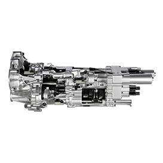

OVERVIEW
Forget the idea of performance you are used to. The Aventador Coupé has been engineered to revolutionize this concept and establish a new benchmark in the segment of super sports cars and beyond. This car aims to bring the future forward. This is a true supercar legend in the making, which combines the tradition of the Lamborghini brand with a level of innovation which takes the House of the Raging Bull to hitherto unexplored territory
EMOTION
The jewel in the crown is the car's V12 engine, hand-built in Sant'Agata Bolognese, naturally balanced and longitudinally mounted in a central position. The excellent acceleration capabilities at any engine speed, the lightning-fast reactivity, and the breathtaking roar of the Aventador demonstrate the incredible power of its engine, the true beating heart of the car which is capable of taking you somewhere anything is possible: once you get there, you'll never want to go back. The feeling you get when you exceed all commonly accepted limits is simply indescribable.
EXTERIOR DESIGN
Design is not sufficient to describe it. It is the signature of a brand which has created the history of the super sports cars all around the world. A Lamborghini must always be recognizable at first sight. This is why every detail of the Aventador Coupé has been conceived to embody the purest DNA of Lamborghini: a true design gem that expresses dynamism and aggression, which has made the carbon-fiber monocoque the symbol of the innovation from our R&D department. The result is a car that offers a truly unforgettable driving experience. The adrenaline remains even after turning off the engine.
INTERIOR
Inside, the Aventador Coupé represents a combination of exclusivity and high-tech luxury: the hand-finished interior, featuring the highest quality materials, is assembled using traditional techniques by a team of professionals, and merges with the cutting edge technology of the instrument cluster. Like in a modern aircraft, the instruments are displayed on an innovative, interactive TFT LCD display. A second TFT display at the center of the instrument panel is devoted to multimedia and navigation functions
DRIVING DYNAMICS
ENGINE

The mid-mount 6.5 liter V-12, generating 700 CV at 8,250 rpm, offers remarkable pick-up at high engine speeds and an incredibly fast response.
The incredible acceleration, achieving a 0 to 100 km/h time of just 2.9 seconds, only partially describes the Aventador Coupé, which is a genuine benchmark in the supercar sector.
TRANSMISSION

The ISR (Independent Shifting Rods) transmission ensures incredibly fast and thrilling gear shifts. The design goal was simple: to create an incredibly fast robotized transmission capable of generating unparalleled excitement. The ISR gearbox also offers two important advantages for a super sports car: a significant weight reduction and a size which is even smaller than a manual gearbox.
SUSPENSION

The innovative push-rod suspension offers a level of driving precision which is only comparable to the best race cars. Inspired by Formula 1, the push-rod spring and damper system has been tuned perfectly to meet the needs of a high-performance road-going vehicle.